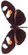
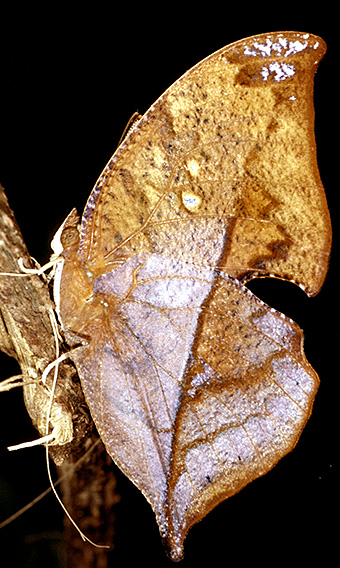

home
papers
research
group
media
contact
mallet butterflies 

The Leafwing butterfly,
Zaretis isidora
, photographed in Corcovado National Park, Costa Rica, 1981 (© J. Mallet)
General information on butterflies and moths (especially tropical)
I include here some general links to Lepidoptera, especially tropical butterflies and particularly Neotropical Lepidoptera
Afrotropical butterflies and skippers (Mark Wilson)
Association for Tropical Lepidoptera
Butterflies of the World: The Taxome Project. More than 80% complete scientific names (Gerardo Lamas et al.)
Butterflies of Ecuador (Keith Willmott & Jason Hall)
Butterflies of Venezuela (Andrew Neild)
Butterfly research, mainly Lycaenidae (Naomi Pierce)
Costa Rica caterpillar database and other things (Dan Janzen and Winnie Hallwachs)
Lepidoptera and other life forms
(
inc.
Heliconius
systematics
) -
FUNET
- Markku Savela
Lepidoptera of the French Antilles (Pierre Zagatti,; Bernard Lalanne-Cassou; Jeanne le Duchat d'Aubigny)
Natural History of Monteverde, Costa Rica
(now maybe offline -- I have linked here to the Internet Archive 2012 save for Ithomiini; Bill Haber)
Type photos of Neotropical Butterflies (Tropical Andean Butterfly Diversity Project, Gerardo Lamas photos, Nick Grishin scripting)
Nymphalidae.net
(Niklas Wahlberg)
Postzygotic isolation and speciation in Lepidoptera. Evolution 56: 1168-1183.
Data table
(As used by Gourbiere & Mallet 2010, currently neglected to be supplied by (
Daven Presgraves
).
Portraits & quotations
Portraits of evolutionists and entomologists
Mimicry, warning colour, aposematism
Mimicry, warning colour, aposematism
Heliconius
and Ithomiinae
General information on
Heliconius
butterflies
General information on Ithomiinae